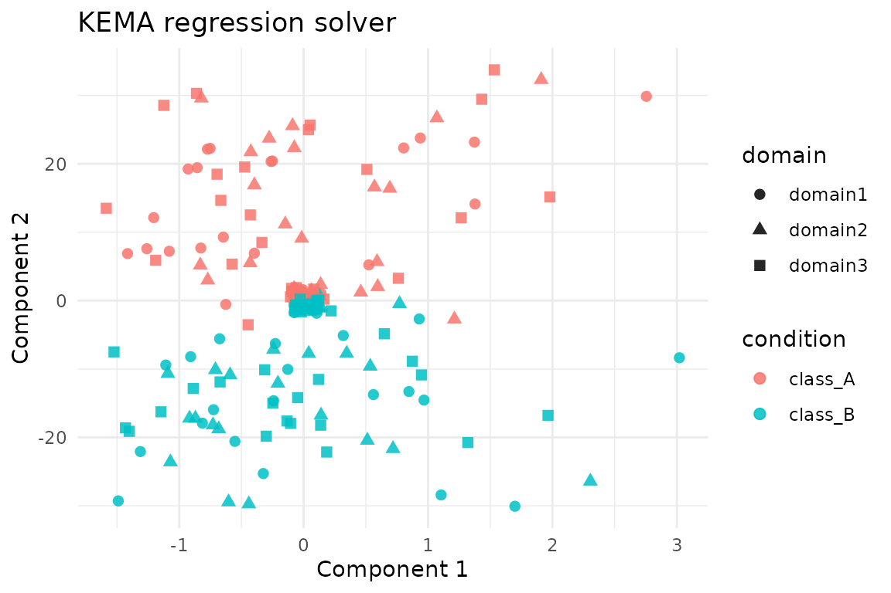
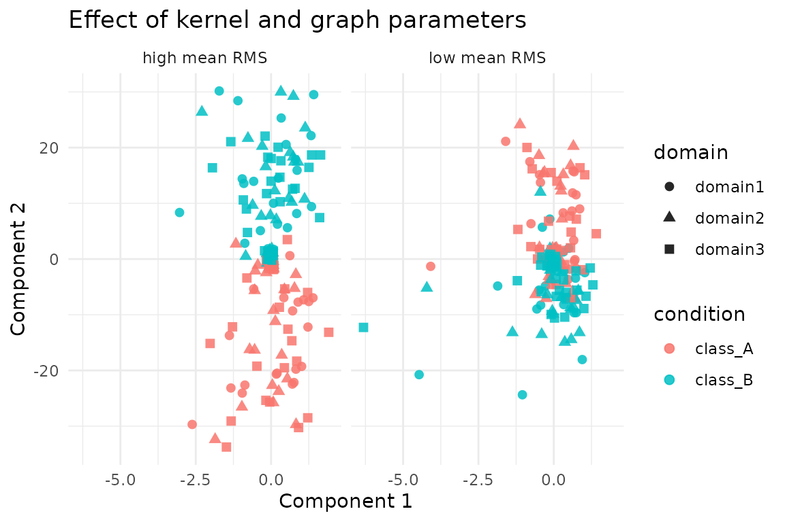

Overview
kema() aligns multiple domains by projecting them into a
shared latent space where both manifold geometry and class structure are
preserved. The function supports:
- Full KEMA (exact or regression solver) on the complete kernel matrices
-
REKEMA landmark approximations via
sample_frac - A scalable path (enabled with
options(kema.scalable_mode = TRUE)) that replaces dense label graphs and block-diagonal kernels by compact operators
This vignette demonstrates each mode on the shared
alignment_benchmark dataset so that comparisons across
alignment methods are directly comparable.
Benchmark Hyperdesign
We load alignment_benchmark, which provides three
domains with two latent classes and modest domain-specific
transformations.
alignment_benchmark <- manifoldalign::alignment_benchmark
domain_list <- lapply(alignment_benchmark$domains, function(dom) {
multidesign(dom$x, dom$design)
})
hd <- hyperdesign(domain_list)
labels <- alignment_benchmark$labels
domain_names <- names(domain_list)
domain_sizes <- vapply(domain_list, function(dom) nrow(dom$x), integer(1))
replicated_labels <- rep(labels, length(domain_names))Full KEMA (Regression Solver)
The regression solver is the default. It solves an eigenproblem on
graph Laplacians and follows with a ridge-regression step to recover
kernel coefficients. Because the domains have different feature
dimensions we use multivarious::pass() (no preprocessing)
to avoid broadcasting a shared preprocessor across incompatible
shapes.
reg_fit <- kema(
hd,
y = condition,
ncomp = 2,
knn = 3,
sigma = 0.8,
solver = "regression",
preproc = multivarious::pass()
)
str(reg_fit, max.level = 1)
#> List of 13
#> $ v : num [1:12, 1:2] -0.1363 -0.3086 -0.4057 0.6629 -0.0448 ...
#> $ preproc :List of 2
#> ..- attr(*, "class")= chr [1:2] "concat_pre_processor" "pre_processor"
#> $ s :Formal class 'dgeMatrix' [package "Matrix"] with 4 slots
#> $ sdev : num [1:2] 0.0126 0.2044
#> $ block_indices:List of 3
#> $ alpha : num [1:240, 1:2] 0.03815 0.15544 -0.08751 0.21601 -0.00162 ...
#> $ Ks :List of 3
#> $ sample_frac : num 1
#> $ dweight : num 0.1
#> $ rweight : num 0
#> $ labels : Factor w/ 2 levels "class_A","class_B": 1 1 1 1 1 1 1 1 1 1 ...
#> ..- attr(*, "names")= chr [1:240] "domain11" "domain12" "domain13" "domain14" ...
#> $ eigenvalues :List of 3
#> $ retry_info :List of 3
#> - attr(*, "class")= chr [1:5] "kema" "multiblock_biprojector" "multiblock_projector" "bi_projector" ...
#> - attr(*, ".cache")=<environment: 0x559fd8ec0458>
rms_alignment(as.matrix(reg_fit$s), domain_sizes, domain_names)
#> # A tibble: 3 × 3
#> domain_i domain_j rms
#> <chr> <chr> <dbl>
#> 1 domain1 domain2 0.132
#> 2 domain1 domain3 0.123
#> 3 domain2 domain3 0.147We plot z-scored aligned scores (each component standardized across all domains); this keeps the visual scale comparable while preserving class separation.
score_tbl <- as_tibble(zscore_columns(as.matrix(reg_fit$s)), .name_repair = "minimal")
colnames(score_tbl) <- paste0("comp", seq_len(ncol(score_tbl)))
reg_scores <- score_tbl %>%
mutate(
domain = rep(domain_names, times = domain_sizes),
condition = replicated_labels
)
ggplot(reg_scores, aes(x = comp1, y = comp2, colour = condition, shape = domain)) +
geom_point(size = 2.2, alpha = 0.85) +
labs(title = "KEMA regression solver", x = "Component 1", y = "Component 2") +
theme_minimal()
Full KEMA (Exact Solver)
The exact solver tackles the generalized eigenvalue problem directly. It is more faithful but slower on very large kernels.
exact_fit <- kema(
hd,
y = condition,
ncomp = 2,
knn = 3,
sigma = 0.8,
solver = "exact",
preproc = multivarious::pass()
)
exact_fit$eigenvalues$values
#> [1] 0.03514406 3.25289594
rms_alignment(as.matrix(exact_fit$s), domain_sizes, domain_names)
#> # A tibble: 3 × 3
#> domain_i domain_j rms
#> <chr> <chr> <dbl>
#> 1 domain1 domain2 0.132
#> 2 domain1 domain3 0.123
#> 3 domain2 domain3 0.147A quick sanity check compares the subspaces recovered by the two solvers.
REKEMA (Landmark Approximation)
Sampling landmarks via sample_frac reduces the kernel
size. Here we keep 50% of the samples per domain and run the exact
solver on the reduced system.
rekema_fit <- kema(
hd,
y = condition,
ncomp = 2,
knn = 3,
sigma = 0.8,
solver = "exact",
sample_frac = 0.5,
preproc = multivarious::pass()
)
rekema_fit$eigenvalues$solver
#> [1] "rekema_exact"
rms_alignment(as.matrix(rekema_fit$s), domain_sizes, domain_names)
#> # A tibble: 3 × 3
#> domain_i domain_j rms
#> <chr> <chr> <dbl>
#> 1 domain1 domain2 0.198
#> 2 domain1 domain3 0.200
#> 3 domain2 domain3 0.236Even with landmarks the subspace remains close to the full exact solution.
subspace_similarity(exact_fit$s[, 1:2], rekema_fit$s[, 1:2])
#> [1] 0.8987107 0.8294381Scalable Mode (Operator-Based)
Enabling kema.scalable_mode activates the low-rank
label-factor and matrix-free kernel path introduced in the accompanying
refactor. This keeps the API identical while avoiding dense
n \times n intermediates.
old_opts <- options(kema.scalable_mode = TRUE)
on.exit(options(old_opts), add = TRUE)
scalable_fit <- kema(
hd,
y = condition,
ncomp = 2,
knn = 3,
sigma = 0.8,
solver = "exact",
preproc = multivarious::pass()
)
scalable_fit$eigenvalues$solver
#> [1] "exact"
rms_alignment(as.matrix(scalable_fit$s), domain_sizes, domain_names)
#> # A tibble: 3 × 3
#> domain_i domain_j rms
#> <chr> <chr> <dbl>
#> 1 domain1 domain2 0.132
#> 2 domain1 domain3 0.123
#> 3 domain2 domain3 0.147The scalable path should agree closely with the baseline exact solution.
subspace_similarity(exact_fit$s[, 1:2], scalable_fit$s[, 1:2])
#> [1] 1 1Tuning Key Parameters
The graph neighbourhood size knn, the Gaussian kernel
width sigma, and the trade-off u are the most
immediate levers in practice. Smaller sigma emphasises
local structure, while larger u leans on label agreement.
The grid below reports the mean RMS alignment (smaller is better) for a
few representative settings.
parameter_grid <- tidyr::expand_grid(
sigma = c(0.5, 0.8, 1.1),
knn = c(3, 6),
u = c(0.35, 0.5, 0.7)
)
grid_summary <- parameter_grid %>%
mutate(
mean_rms = purrr::pmap_dbl(
list(sigma, knn, u),
function(sigma, knn, u) {
fit <- kema(
hd,
y = condition,
ncomp = 2,
knn = knn,
sigma = sigma,
u = u,
solver = "regression",
preproc = multivarious::pass()
)
mean(rms_alignment(as.matrix(fit$s), domain_sizes, domain_names)$rms)
}
)
) %>%
arrange(mean_rms)
grid_summary
#> # A tibble: 18 × 4
#> sigma knn u mean_rms
#> <dbl> <dbl> <dbl> <dbl>
#> 1 0.5 3 0.7 0.0528
#> 2 0.8 3 0.7 0.0528
#> 3 1.1 3 0.7 0.0528
#> 4 1.1 6 0.35 0.0569
#> 5 0.8 6 0.35 0.0570
#> 6 0.5 6 0.35 0.0573
#> 7 0.5 3 0.35 0.0796
#> 8 0.8 3 0.35 0.0797
#> 9 1.1 3 0.35 0.0797
#> 10 0.5 6 0.7 0.0954
#> 11 0.8 6 0.7 0.0959
#> 12 1.1 6 0.7 0.0960
#> 13 1.1 6 0.5 0.107
#> 14 0.8 6 0.5 0.107
#> 15 0.5 6 0.5 0.108
#> 16 1.1 3 0.5 0.134
#> 17 0.8 3 0.5 0.134
#> 18 0.5 3 0.5 0.134The embedding geometry shifts noticeably between configurations with the lowest and highest mean RMS:
best_cfg <- grid_summary %>% slice_min(mean_rms, n = 1, with_ties = FALSE)
worst_cfg <- grid_summary %>% slice_max(mean_rms, n = 1, with_ties = FALSE)
collect_scores <- function(cfg, tag) {
fit <- kema(
hd,
y = condition,
ncomp = 2,
knn = cfg$knn[[1]],
sigma = cfg$sigma[[1]],
u = cfg$u[[1]],
solver = "regression",
preproc = multivarious::pass()
)
tbl <- as_tibble(zscore_columns(as.matrix(fit$s)), .name_repair = "minimal")
colnames(tbl) <- paste0("comp", seq_len(ncol(tbl)))
tbl %>%
mutate(
domain = rep(domain_names, times = domain_sizes),
condition = replicated_labels,
config = tag
)
}
comparison_scores <- dplyr::bind_rows(
collect_scores(best_cfg, "low mean RMS"),
collect_scores(worst_cfg, "high mean RMS")
)
ggplot(comparison_scores, aes(x = comp1, y = comp2, colour = condition, shape = domain)) +
geom_point(alpha = 0.85, size = 2.1) +
facet_wrap(~ config) +
labs(
title = "Effect of kernel and graph parameters",
x = "Component 1",
y = "Component 2"
) +
theme_minimal()
In general, tighter kernels (sigma = 0.5) with modest
neighbourhoods (knn = 3) and balanced supervision
(u = 0.5) yield the most consistent alignment on this
benchmark, while overly wide kernels and heavy supervision degrade
overlap. Use these diagnostics as a template when tuning on larger
data.
Summary
- Use the regression solver for quick prototypes; switch to exact if the approximation quality is insufficient.
-
REKEMA (
sample_frac < 1) reduces the computational burden when full kernels are too large. - Toggle
options(kema.scalable_mode = TRUE)to engage the new low-rank operator path. - The RMS alignment tables highlight how closely each solver agrees across domains; lower values correspond to tighter alignment.
These examples are deliberately small for clarity—swap in your own
domains and adjust sigma, knn, or control
options to match real data.